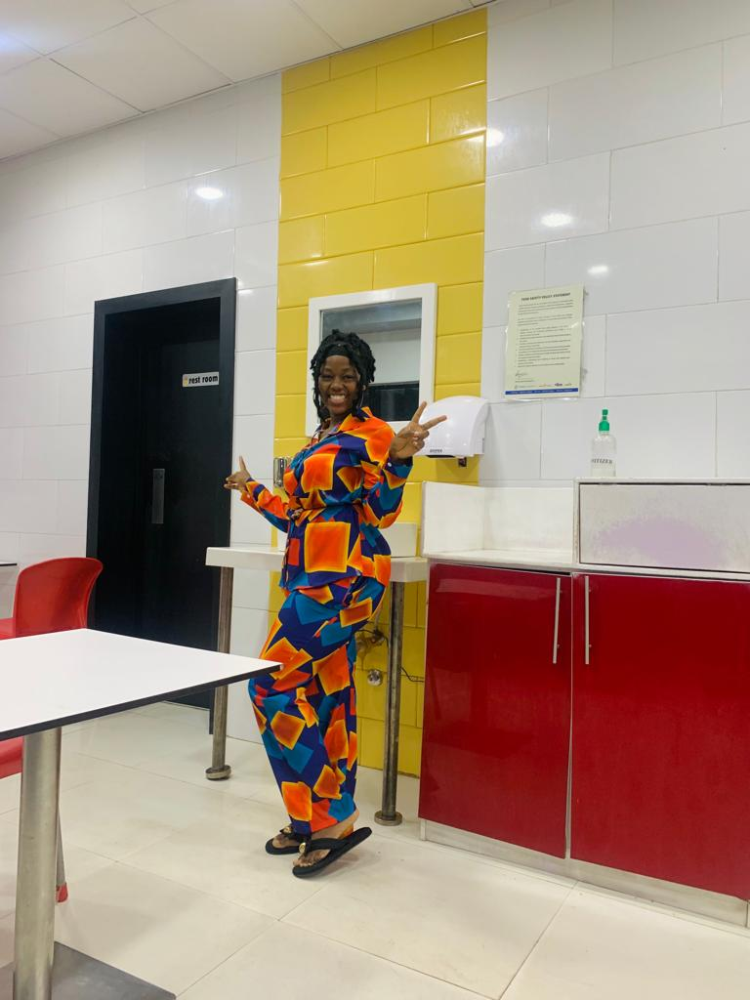

Hello My World

This is a picture of me above. I am Soremekun Ayomiposi, a Nigerian. I am 19 years old, a fresh student of computer science and this is my first website project. Perhaps there is a lot of errors in the website, please bear with me, I know nothing yet.
My Top 3 Movies
Woman King
It is my favourite Historical Movies. I love the African Culture
Almajiri
Rooted in Human Trafficking. It reveals how much the World needs to make the act stop.
Grey
Extremely beautiful love story. it shows loves truly is above all things.
Things I love to do
- I love to improving my self and personal skills. I so much believe in growth
- I love taking care of my families and loved ones
- My babe, he is also my personal tutor too and my favorite person...lol
- My mum and siblings
- Moyinoluwa(she is my niece and my little cupcake)
- Friends and families, basically people in need
- I love to play the guitar, it calms my soul and makes everything seem like all is going to make sense one day
- l love going to the gym. I see the gym as a therapy for my mind, body and soul. Keeping fit and also maintaing good mental health
Things I dislike
- I do not like breeding animals like dogs and cat.
- I dislike tears.... can't breathe whenever I cry
I am not very choosy,so yes I do not dislike a lot of things..lol.
My top Favorite Websites
- orphanges>
- fbi
My Birthday
My birthday is 2nd of June of every year. The party for this year will be coming up soon, details are below. Perhaps you see this after the date, please know it has passed.

What to bring:
- Ballons (I love baloons)
- Cake (I'm really good at eating)
- An appetite (There will be lots of foods)
This is where you need to go:
my address map link
My Contact
- Email: soremekunayomiposi16@gmail.com
- Tel No: +2349068802401
Or you can press on the link below
contact me